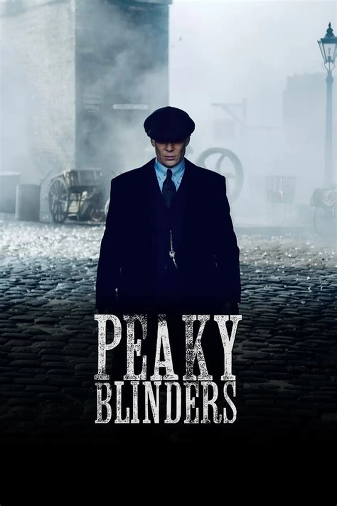
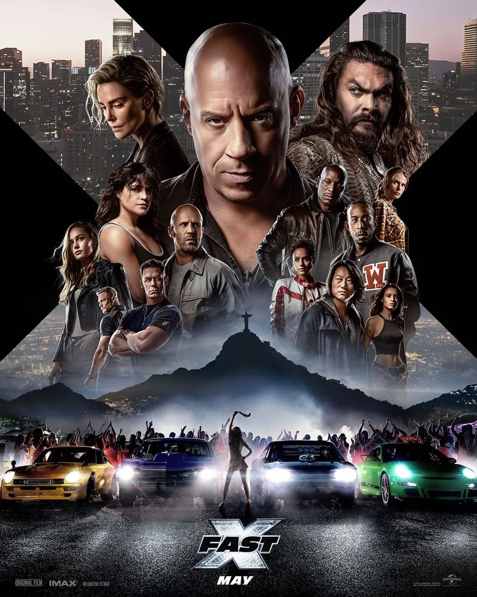
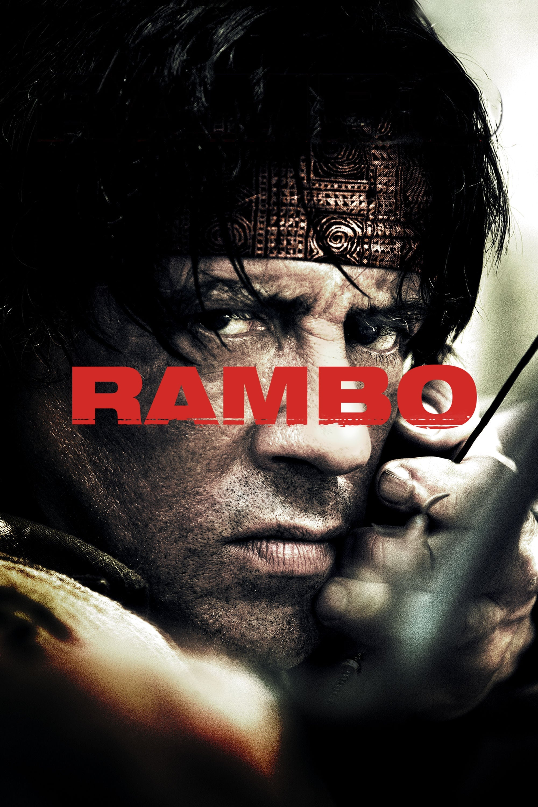
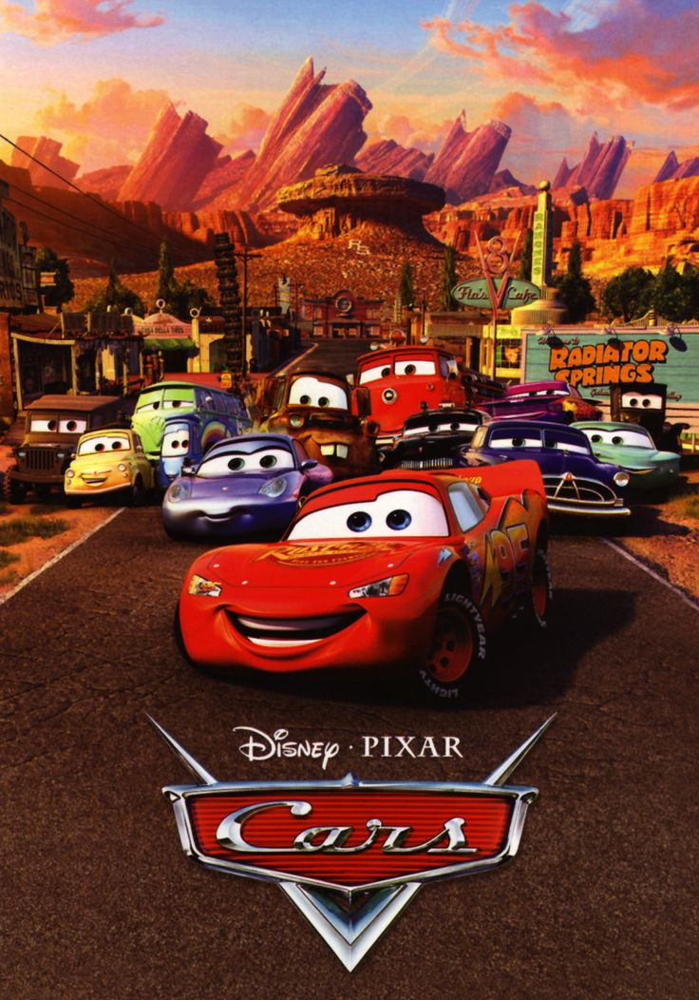
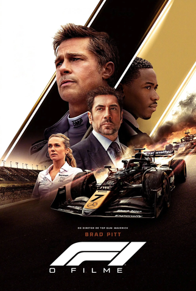
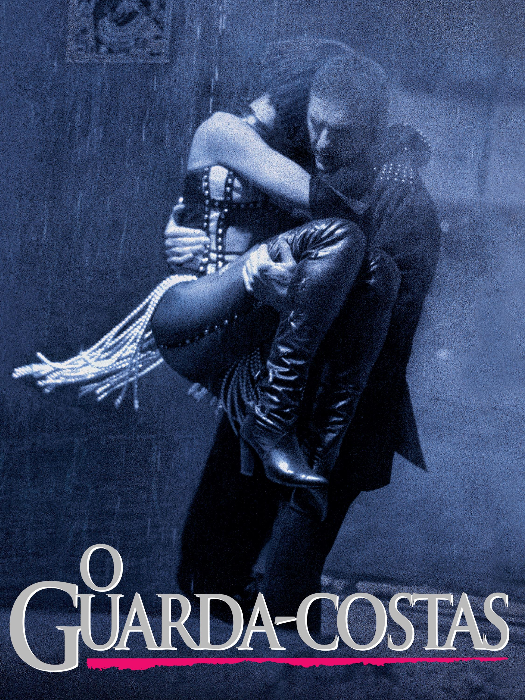

A série acompanha a ascensão da família Shelby,
um clã de gângsteres de origem cigana que lidera
uma gangue conhecida como Peaky Blinders (famosos por
costurarem lâminas de barbear em suas boinas). Sob o
comando do calculista e ambicioso Thomas "Tommy" Shelby,
a família evolui de simples corretores de apostas ilegais
para um império que alcança a política e o comércio internacional.
John Rambo, interpretado por Sylvester Stallone,
vive uma vida pacata no norte da Tailândia, pilotando
um barco no Rio Salween. Após uma guerra civil na Birmânia,
que envolve os birmaneses e a tribo Karen, Rambo é convidado
por missionários para ajudar a resgatar voluntários cristãos.
Inicialmente recusado, Rambo aceita a proposta, mas logo se
envolve na operação de resgate, enfrentando os perigos da guerra
e os ataques da milícia local. O filme é conhecido por seu estilo
de ação intensa e por retratar a personalidade
do personagem principal, Rambo.
Velozes e Furiosos começou com rachas de rua
e roubo de carga, mas virou uma saga de espionagem
impossível. Dominic Toretto e sua "família" de
pilotos passam de criminosos locais a heróis globais
que saltam de prédios e desafiam a física. O tema
central é sempre a lealdade absoluta entre eles,
regada a carros potentes e muita ação.
Carros é a história de Relâmpago McQueen, um
piloto de corrida arrogante que só pensa em fama
e troféus. Após se perder e ficar preso em Radiator
Springs, uma cidadezinha esquecida na Rota 66, ele
é forçado a desacelerar. Lá, ele faz amizade com o
guincho Mate e aprende com o veterano Doc Hudson que
caráter e amizade valem muito mais do que cruzar a
linha de chegada em primeiro lugar. No fim, ele
descobre que ganhar não é tudo.